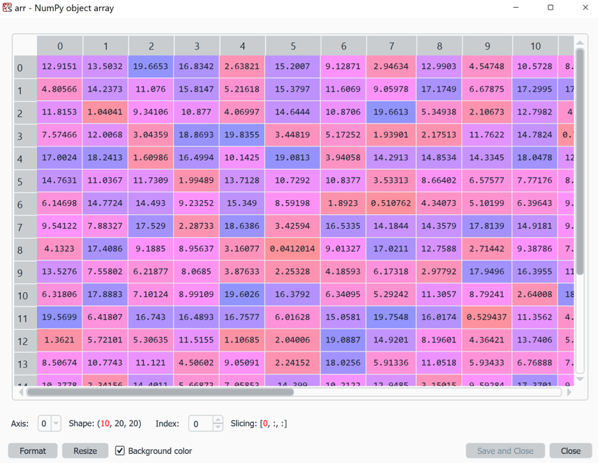

20. Numpy - part 2#
Wir haben uns jetzt einige Basics mit Numpy angeschaut. Dabei ging es v.a. um das Erstellen von Numpy Arrays und das Slicing um die gewünschten Einträge aus den Arrays zu erhalten. Dabei kamen auch schon ein paar der großen Vorteile von Numpy zur Sprache, z.B. können mit Numpy Arrays wirklich sehr große (numerische) Datenarrays bearbeitet werden und zwar auch Arrays mit vielen Dimensionen (siehe .ndim). Ebenso können mit Numpy sehr effizient große Mengen an Zufallszahlen erstellt werden und zwar aus sehr vielen verschiedenen Verteilungen (numpy.random).
Hier werden wir auf einige weitern sehr wichtigen und hilfreichen Funktionalitäten von Numpy eingehen, u.a. da Sortieren von Arrays, das finden bestimmter Werte und die hohe Performance als einer der Kernvorteile von Numpy.
Aber zuerst kurz zu einer guten Möglichkeit, größere Arrays anzuschauen (noch nicht groß wie in „big data“ , aber schon größer als print()).
20.1. Arrays anschauen#
In der Praxis arbeiten wir oft mit großen, teilweise mehrdimensionalen Numpy Arrays. Das macht den Umgang am Anfang etwas gewöhnungsbedürftig, auch da unsere bisherigen Methoden um die Daten anzusehen (z.B. mit print()) hier schnell an Grenzen stoßen.
Spyder hat als Editor hier einen Vorteil: Über den Variable Explorer lassen sich Numpy Arrays sehr gut betrachten! Ein Beispiel um den Explorer damit auszuprobieren:
import numpy as np
arr1 = 20 * np.random.random((10, 20, 20))
Im Variable Explorer können wir auch immer nur 2D-Arrays anzeigen lassen, aber es kann ausgewählt werden entlang welcher Axe(n) ein Schnitt angezeigt wird ( Axis) und mit Index: kann die jeweilige Ebene ausgewählt werden.

Tipp: Im Variable Explorer mit den unten angezeigten Feldern „Axis“ und „Index“ spielen. Damit kann z.B dieses 3-dimensionale Array von verschiedenen Seiten (axis) her betrachtet werden.
Natürlich ist auch dieser Zugang begrenzt. Für sehr große Arrays, also Arrays mit sehr vielen Elementen (Stichwort: „big data“) und/oder Arrays mit vielen Dimensionen, wird es irgendwann auch über den Variable Explorer in Spyder schwierig.
20.2. Sortieren!#
Schon bei den Listen hatten wir die Möglichkeit mit der .sort() Methode die Elemente zu sortieren. Keine große Überraschung also, dass auch Numpy Arrays eine Sortiermethode mitbringen. In Wirklichkeit gibt es in NumPy sogar viele verschiedene!
Als erstes können wir Arrays genau wie Listen sortieren und zwar mit .sort():
import numpy as np
arr = np.random.random(100)
arr.sort() # sort from small to large
print(arr)
Auch 2D (oder noch höher-dimensionale Arrays) können damit sortiert werden, dabei wird die Sortierung allerdings immer nur entlang einer Achse durchgeführt:
import numpy as np
arr = np.random.random((20, 20))
arr.sort()
# or
arr = np.random.random((20, 20))
arr.sort(axis=0)
20.2.1. Argsort#
Eine weitere sehr wichtige Sortier-Methode ist argsort(). Damit berechnet Numpy die Indices die alle Elemente nach Größe sortieren würden.
arr = np.array([6, 7, 8, 9, 3, 2, 3, 1, 0, 5])
order = np.argsort(arr)
print(f"Die Top3 Einträge sind Nummer: {order[::-1][:3]}")
Der Nutzen von argsort() wird bald deutlicher, wenn wir nämlich mit größeren, komplexeren Daten arbeiten. Dort wollen wir nämlich nicht immer eine gesamte Tabelle sortieren um dann die höchsten Elemente zu sehen, sondern wir möchten häufig nur wissen: Wo stehen die 10 höchsten/niedrigsten Werte in der Tabelle.
Wenn wir es mit mehrdimensionalen Arrays zu tun haben, beziehen sich sort() und auch argsort() immer nur auf eine Achse/eine Dimension. Um welche Richtung es geht kann bei beiden Funktionen mit axis angegeben werden, z.B. so:
arr = np.arange(0, 100).reshape(20, 5)
sorted_idx = np.argsort(arr, axis=0)
Was ist aber, wenn wir alle Werte in einem 2D-Array entsprechend der Größe in nur einer „Spalte“ sortieren wollen. Argsort bietet im Prinzip die Möglichkeit dazu:
arr = np.random.random((20, 20))
# Indizes der ersten "Reihe" sortieren
sorted_idx = np.argsort(arr, axis=1)
# Um damit eine tatsächliche Sortierung vorzunehmen
arr_sorted = np.take_along_axis(arr, sorted_idx, axis=1)
Was aber, wenn wir nach mehreren Spalten/Zeilen gleichzeitig sortieren wollen? Dafür können wir lexsort() benutzen.
20.2.2. Lexsort#
lexsort() erlaubt es und in einem Array entlang mehrerer Werte zu sortieren. Und auch, wenn wir Numpy bis hierhin nur für numerische Werte genutzt haben. Das Ganze geht auch mit anderen Datentypen wie z.B. strings:
surnames = ('Hertz', 'Galilei', 'Hertz')
first_names = ('Heinrich', 'Galileo', 'Gustav')
idx = np.lexsort((first_names, surnames))
print(idx)
Aber häufiger noch sind nach wie vor die numerischen Beispiele.
arr = np.array([[3, 2, 1, 2],
[5, 4, 3, 3]])
print(np.lexsort(arr))
Achtung: Bei lexsort() können wir leider nicht ganz so einfach mit axis arbeiten. Wenn wir hier die Richtung der Sortierung ändern wollen ist es besser das Array zu verändern, z.B. es zu drehen mit np.rot90().
Alternativ können auch alle nötige
n 1D-Arrays als Tuple übergeben werden:
import numpy as np
arr1 = np.random.randint(0, 10, size=(100))
arr2 = np.random.randint(0, 10, size=(100))
sorted_idx = np.lexsort((arr2, arr1))[::-1]
print(arr1[sorted_idx[:10]])
print(arr2[sorted_idx[:10]])
20.3. Einträge auswählen/finden#
Wir haben bereits eine Möglichkeit gesehen, Werte in einem Numpy Array auszuwählen und zwar über eine Maske, also z.B.
arr = np.random.randint(0, 100, size=(10, 10))
# select using mask
mask = arr < 5
print(arr[mask])
# or: select and change
arr[mask] = 0
print(arr)
20.3.1. numpy.where#
Oft möchten wir aber die genauen Indizes (also die Positionen im Array) erhalten für Werte die unseren Suchkriterien entsprechen. Das geht mit numpy.where, hier ein Beispiel:
arr = np.random.randint(0, 100, size=(10, 10))
selected_idx = np.where(arr < 5)
print(selected_idx) # -> gibt die Positionen im Array aus die Werte <5 enthalten.
20.4. Arrays kombinieren#
In Numpy gibt es die Möglichkeit Arrays zu verbinden, sofern deren Abmessungen es zulassen.
Zum einen kann dies über vstack, hstack, dstack gemacht werden.
Eine andere Option ist über concatenate.
20.5. Berechnungen mit Numpy#
Numpy Arrays sind in Python das Standard-Format um mit großen (numerischen) Datenmengen zu arbeiten. Bisher haben wir gesehen, was es alles für Grundfunktionen/methoden mit Numpy Arrays gibt. Jetzt aber noch ein paar Beispiele die illustrieren sollen, wie und warum diese Arrays so gerne in der Praxis eingesetzt werden.
Wir werden dafür eine weitere Bibliothek nutzen: matplotlib, das ist in Python die am häufigsten genutzte Bibliothek um Daten zu plotten.
(1) Werte-Berechnungen mit mathematischen Funktionen.
Numpy bringt einige mathematische Funktionen mit, z.B. np.sin()(Sinus), np.cos() (Cosinus), np.exp()(Exponentialfunktion) oder np.log()(Logarithmus). Sehr, sehr viele weiter Optionen finden sich z.B. in der Bibliothek SciPy (https://scipy.org/).
import numpy as np
from matplotlib import pyplot as plt
x = np.linspace(-10, 10, 500)
y = np.sin(x)
plt.plot(x, y, "darkblue")
Hier werden 500 Datenpunkte erzeugt mit x-Werten die gleichmäßig zwischen -10 und 10 verteilt sind. Von allen wird der Sinus berechnet und anschließend graphisch dargestellt.
(2) Operationen auf vielen Datenpunkten gleichzeitig + Zufallszahlen.
Numpy bietet enorme Möglichkeiten für die Nutzung von Zufallszahlen. Wir hatten vorher auch schon die Bibliothek random kennengelernt, doch damit ließ sich immer nur eine Zufallszahl nach der anderen erzeugen. Mit Numpy können (für unsere Zwecke) beliebig große Arrays aus Zufallszahlen erzeugt werden. Darüber hinaus bietet Numpy sehr verschiedene Arten von Zufallsverteilungen!
import numpy as np
from matplotlib import pyplot as plt
xy = np.random.random((2, 100))
sizes = 100 * np.random.random(100)
plt.scatter(xy[0, :], xy[1, :], s=sizes)
Eine andere Verteilung bekommt man mit np.random.randn()(Normalverteilung!):
import numpy as np
from matplotlib import pyplot as plt
xy = np.random.randn(2, 1000)
plt.scatter(xy[0, :], xy[1, :], alpha=0.3)
(3) Statistik und Simulationen NumPy erlaubt es große Mengen an Zufallszahlen zu generieren und damit zu arbeiten. Das hat in der Praxis viele verschiedene Verwendungen, wie z.B. für die Modellierung von stochastischen Prozessen oder für Computer-Simulationen.
import numpy as np
random_numbers = np.random.random((1000, 1000))
print(f"Mean: {random_numbers.mean()}")
print(f"Numbers > 0.5: {np.sum(random_numbers > 0.5)}")
print(f"Numbers < 0.5: {np.sum(random_numbers < 0.5)}")
(4) Speed! Numpy ist zum Teil in Sprachen wie C implementiert und für viele Rechenoperationen deutlich schneller als das „normale“ Python. Ein Beispiel:
import random
import time
import numpy as np
print("Pure Python ......................")
generated_numbers = int(1e7)
tstart = time.time()
numbers = []
for _ in range(generated_numbers):
numbers.append(random.random())
print(sum(numbers))
print(f"Calculation took {time.time() - tstart}s")
print("\nNumPy ......................")
tstart = time.time()
numbers = np.random.random(generated_numbers)
print(np.sum(numbers))
print(f"Calculation took {time.time() - tstart}s")